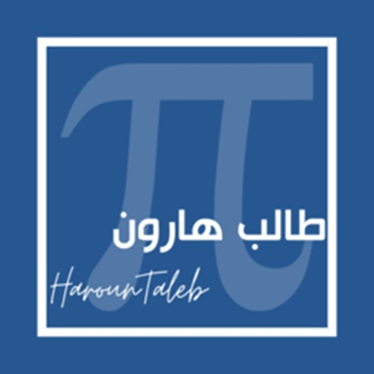

مكتبة شاملة لجميع محاور الرياضيات - بكالوريا
الأستاذ: طالب هارون
كل أسئلة الدوال مجمعة في ملف واحد، لا تفوتها.
تجميعية لأسئلة الاختيار من متعدد لتدريب سرعة البديهة.
"Where there's a will, there's a way"
بالتوفيق لجميع التلاميذ في شهادة البكالوريا